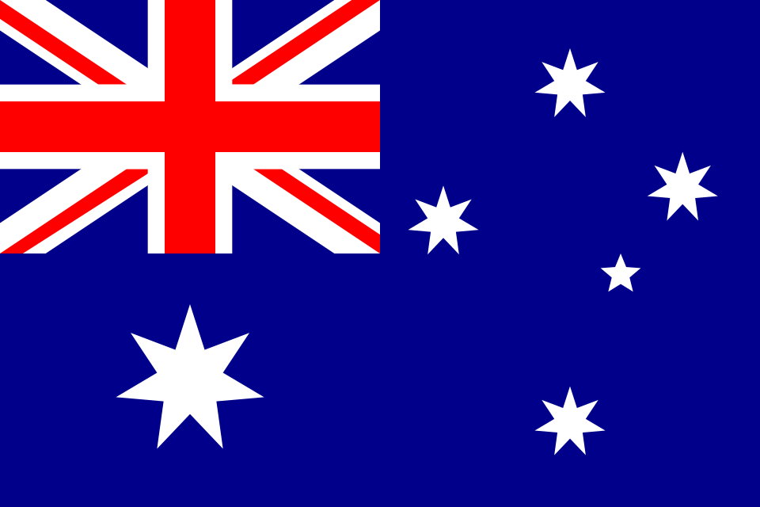

Barrio Uno - Mundial 2026
- GRUPO D -
Estados Unidos

Paraguay

Australia

Turquia

| País | Horarios | Estadios | Ciudades | Historia | Estadísticas | Curiosidades |
|---|---|---|---|---|---|---|
| Estados Unidos | 12-jun-2026 vs Paraguay (21:00 ET); 19-jun-2026 vs Australia (15:00 ET); 25-jun-2026 vs Turquía (22:00 ET). | SoFi Stadium, Lumen Field, SoFi Stadium | Los Ángeles, Seattle, Los Ángeles | Anfitrión del Mundial 2026. Alcanzó el tercer lugar en 1930. | 12 participaciones; mejor resultado: 3.er lugar (1930). | Bert Patenaude anotó el primer hat-trick de la historia de los Mundiales. |
| Paraguay | 12-jun-2026 vs Estados Unidos (21:00 ET); 19-jun-2026 vs Turquía (23:00 ET); 25-jun-2026 vs Australia (22:00 ET). | SoFi Stadium, Levi's Stadium, Levi's Stadium | Los Ángeles, Santa Clara (San Francisco Bay Area), Santa Clara | Regresa al Mundial después de 2010, donde alcanzó los cuartos de final. | 9 participaciones; mejor resultado: cuartos de final (2010). | Es una de las selecciones sudamericanas con más presencias mundialistas. |
| Australia | 13-jun-2026 vs Turquía (00:00 ET); 19-jun-2026 vs Estados Unidos (15:00 ET); 25-jun-2026 vs Paraguay (22:00 ET). | BC Place, Lumen Field, Levi's Stadium | Vancouver, Seattle, Santa Clara | Alcanzó los octavos de final en 2006 y 2022. | 7 participaciones; mejor resultado: octavos de final (2006 y 2022). | Tony Popovic, su entrenador, jugó el Mundial 2006. |
| Turquía | 13-jun-2026 vs Australia (00:00 ET); 19-jun-2026 vs Paraguay (23:00 ET); 25-jun-2026 vs Estados Unidos (22:00 ET). | BC Place, Levi's Stadium, SoFi Stadium | Vancouver, Santa Clara, Los Ángeles | Regresa a una Copa del Mundo tras su histórico tercer lugar en 2002. | 3 participaciones; mejor resultado: 3.er lugar (2002). | Su campaña de 2002 es considerada una de las sorpresas más importantes de los Mundiales. |